TECHVESTVENTURES DAILY RISK ALERTS — Emergent News Digest — Nov 23, 2026, 12:00 PM EST ALL RISK REPORTS click TVV Risk Center
TVV RESEARCH DIGEST — November 23, 2026 — 13 desks
Prioritized Risk Summary November 23, 2026
| Sections Ranked for Importance Today | |
|---|---|
| TECHNOLOGY | Nvidia reinstates Huang; stock +34% as its 10-Q stays unfiled before Dec 4 |
| STOCKS | S&P 500 rebounds 5.1% after its 8.6% crash week; Nasdaq up 6.9% |
| COMMODITY | Gold rebounds 4.4% after 9.5% weekly drop; Brent falls 4% to $86 |
| ECONOMY | Traders price 96% odds of a December Fed hike; 2-year yield jumps 10 bp |
| GEOPOLITICS | Iran vows all means against US blockade; Ukraine sinks Russian warship in Libya |
| TERROR | Temple Mount suicide-attack plot alleged; Thanksgiving crowds 2.6% above 2025 |
| HEALTH | Fighting traps Ebola responders in Ituri; early flu season at #2 of 12 seasons |
| DERIVATIVES | Bank derivatives hit record $300.5T; SPX 0DTE at 3.58M contracts a day |
| AI BOOST | Millennium Prize odds jump to 73% after unverified Riemann claim |
| PREDICTIONS | Bettors put Huang staying at 96%, up from 16% a week ago |
| INFRASTRUCT | Big-5 capex hits $230B a quarter, up 118%; Brazil storm unroofs 7,800 homes |
| SPACE | NOAA sees no storm through Nov 25; magnetic north keeps drifting |
| QUAKES | No deadly M6+ quake; four M6.5+ in seven days, a 3% rarity |
1. Major Geopolitical Conflict Developments
- ★ Iran vows to break the blockade: Foreign Ministry spokesman Esmaeil Baghaei said Monday Iran "will use all available means" to counter the US naval blockade, calling it military aggression and citing Article 51 of the UN Charter, while saying Hormuz could reopen within two days if Washington lifts the blockade and sanctions. President Trump told Fox News he is inclined to resume strikes after the new year if no deal is reached and said Iranian ships testing the blockade would "all be at the bottom of the sea." Israeli outlets report CENTCOM at maximum readiness (i24NEWS) and a US decision to delay any strike by at least a week (Ynet); reports of more than 14 tankers gathering near Kharg Island to test the blockade are not independently confirmed. Al Jazeera · Iran International · CBS News
- ★ Gulf spillover, bets calmer than headlines: Yemen's Houthis claim an attack on Saudi Arabia's Rabigh oil refinery (The New Arab), adding pressure on the Saudi oil sector (The Arab Weekly). The Polymarket contract on military action against the Saudi East-West pipeline by Nov 30 resolved at 95.5% Yes, yet bettors cut Saudi airspace-closure odds to 5.5% from 17.5% a month ago and Houthis entering Saudi Arabia to 16.0% from 27.0%; a US-Iran effective ceasefire by Dec 31 is priced at 75.5% (see graph). Near term, bettors expect strikes to continue without a wider Gulf shutdown. The New Arab · The Arab Weekly · Polymarket
- ★ War reaches North Africa: Ukraine says seven naval drones launched from a mothership sank the Russian corvette Merkury, commissioned in 2023, at the Benghazi naval base in eastern Libya on Sunday and hit the cargo ship Angara, which Kyiv says carried weapons; Zelensky called it an "exemplary" operation. Satellite images from Vantor show the corvette capsized with only its bow visible (BBC). The Kremlin declined direct comment and warned of rising regional tension; the UN mission in Libya called for an independent investigation. Libya's health ministry treated people injured on a commercial ship struck offshore; whether it was the Angara is unclear. AP News · BBC · UN News
- ★ Baltic update: the Kremlin accused Ukraine of "terrorist activity" in the Baltic after the drone strike on a Russian cargo ship off Finland (Reuters), and insurers say the attack brings war risk to Baltic shipping lanes (Insurance Business). The Caldara-Iacoviello daily geopolitical risk index's 7-day average stands at 162, 13% above its 2025 average, as the Iran and Ukraine wars widen at sea (see graph). Reuters · Insurance Business · Caldara-Iacoviello GPR
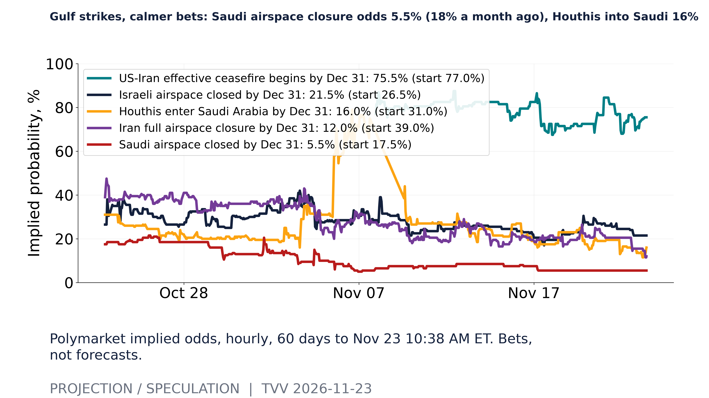
Gulf strikes, calmer bets: Saudi airspace closure odds 5.5% (18% a month ago), Houthis into Saudi 16%. Polymarket implied odds, hourly, 60 days to Nov 23 10:38 AM ET. Bets, not forecasts. [Projection/Speculation; data as of 2026-11-23 10:38 ET] Source: polymarket.com data page
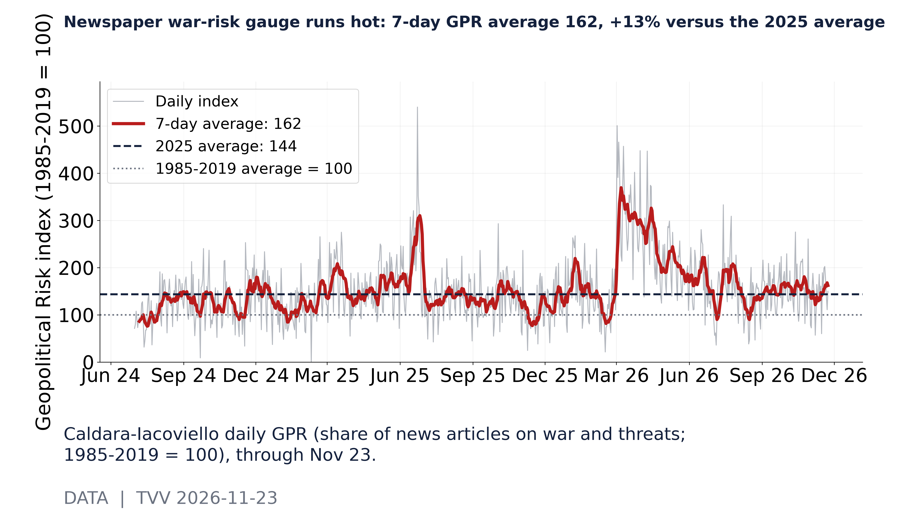
Newspaper war-risk gauge runs hot: 7-day GPR average 162, +13% versus the 2025 average. Caldara-Iacoviello daily GPR (share of news articles on war and threats; 1985-2019 = 100), through Nov 23. [Data; data as of 2026-11-23] Source: matteoiacoviello.com data page
2. Major Terror / Security Incidents
- ★ Jerusalem plot alleged: a pharmacy assistant is accused of plotting a suicide attack on Jews at the Temple Mount, one of the most volatile sites in the region (Ynetnews). Ynetnews
- ★ Foiled concert attack confirmed: former Mossad chief David Barnea says Mossad played a key role in thwarting the 2024 ISIS plot against Taylor Swift's Vienna concerts, a reminder that mass-crowd events remain prime targets (The Times of Israel). Barnea also called for overthrowing Iran's regime "even at the cost of war" (i24NEWS). The Times of Israel · i24NEWS
- ★ Cyber wave: The Hacker News reports AI-assisted cyberattacks triggered unauthorized payments at Indian banks and fintech firms; a major cyberattack hit IT systems at Guadeloupe's university hospital (RFI); the European Commission confirmed a personal-data leak after a cyberattack and warned of further disruption (POLITICO); and UK retailer Next issued a warning after hackers accessed data through a supplier (The Guardian). The Hacker News · RFI · POLITICO · The Guardian
- ★ Thanksgiving crowds under a threat warning: TSA screened 2,631,412 people on Sunday Nov 22, and traffic in the last 14 days runs 2.6% above the same days of 2025. Scaling last year's pattern projects about 3.22 million on Sunday Nov 29, above the 3.13 million record of Nov 30, 2025 (see graph). Near term, record crowds mean longer lines and more exposed soft targets at airports through Sunday. TSA · NewsNation
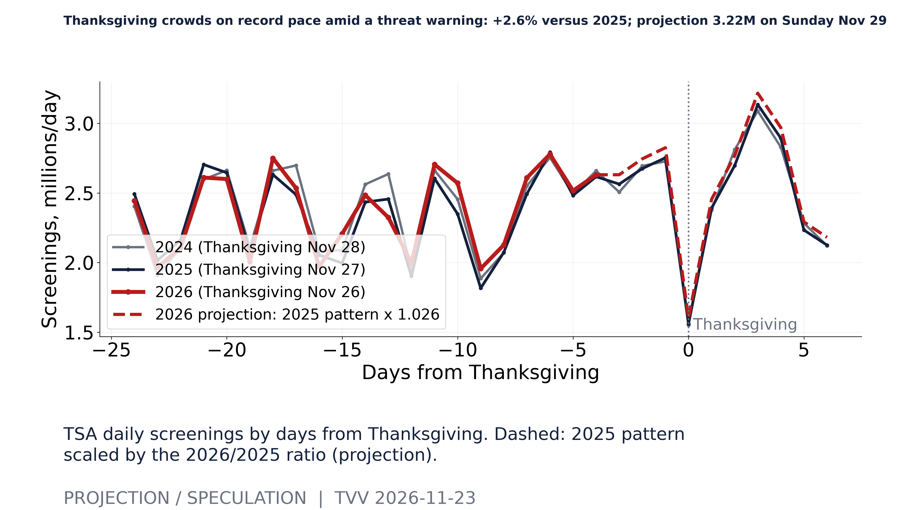
Thanksgiving crowds on record pace amid a threat warning: +2.6% versus 2025; projection 3.22M on Sunday Nov 29. TSA daily screenings by days from Thanksgiving. Dashed: 2025 pattern scaled by the 2026/2025 ratio (projection). [Projection/Speculation; data as of 2026-11-22] Source: tsa.gov data page
3. Earthquakes and Eruptions
- ★ No new M6+ earthquake with significant casualties or damage since our last issue. A deep M6.5 struck the Vanuatu region on Nov 23 (02:40 UTC) with no tsunami threat (Nature World News; Phivolcs) and a green USGS PAGER alert. It made four M6.5+ quakes in seven days, with Indonesia, Peru and Timor-Leste; a burst matched or beaten in only 3.1% of weeks since 1990, against a long-run average of 0.89 a week (see graph). Clusters on different plates are usually coincidence, not a linked trigger. USGS · Nature World News
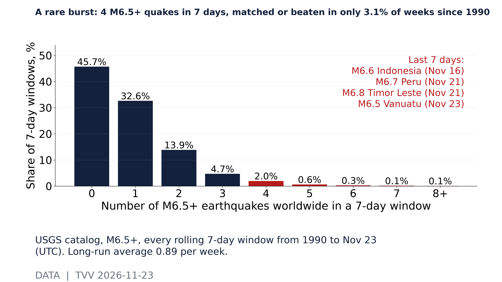
A rare burst: 4 M6.5+ quakes in 7 days, matched or beaten in only 3.1% of weeks since 1990. USGS catalog, M6.5+, every rolling 7-day window from 1990 to Nov 23 (UTC). Long-run average 0.89 per week. [Data; data as of 2026-11-23 15:38 UTC] Source: earthquake.usgs.gov data page
4. Solar / Space Weather
- ★ Mixed storm signals: NOAA's 3-day forecast issued Nov 23 expects no G1 or stronger storm through Nov 25, while SpaceWeatherLive reported a minor G1 storm on Nov 23; the two sources conflict. GFZ data count 57 storm days so far in 2026 (pace 64) versus 97 in 2025 and a 1932-2025 average of 79 (see graph). Near term, storm days usually stay elevated in a cycle's declining phase, when coronal holes and fast solar wind are common, even as sunspots fade. NOAA SWPC · SpaceWeatherLive · GFZ Potsdam
- ★ Long-horizon watch: NOAA's measured north magnetic pole positions moved 454 km from 2015 to 2025, about 45 km a year, slowing to about 37 km a year, still toward Siberia. Measured field weakening and pole drift are real, but no one can predict the timing of a sudden geomagnetic shift or excursion. Michael Hentschel's own view: 2035 at the earliest, with critical earth changes along the way. NOAA NCEI
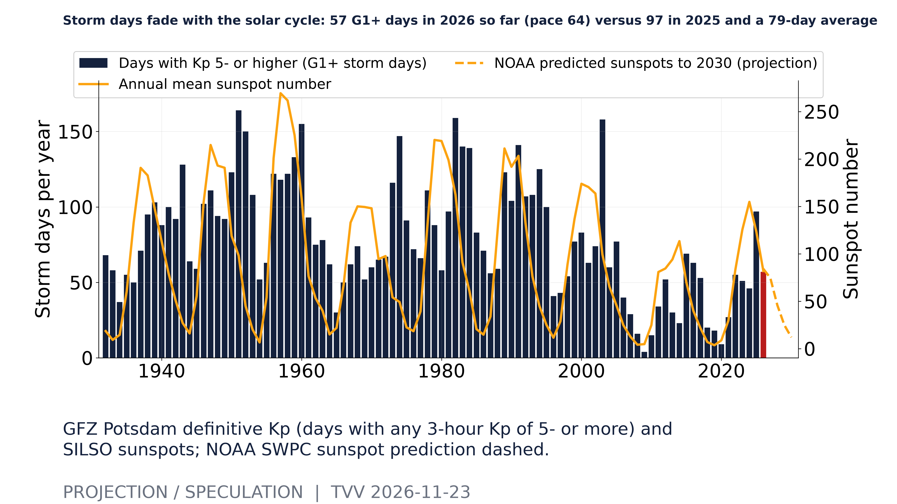
Storm days fade with the solar cycle: 57 G1+ days in 2026 so far (pace 64) versus 97 in 2025 and a 79-day average. GFZ Potsdam definitive Kp (days with any 3-hour Kp of 5- or more) and SILSO sunspots; NOAA SWPC sunspot prediction dashed. [Projection/Speculation; data as of 2026-11-22] Source: kp.gfz-potsdam.de data page
5. Critical Infrastructure / Transportation Disruptions
- ★ The AI build-out keeps accelerating: Microsoft, Alphabet, Amazon, Meta and Oracle spent $230 billion on capital projects in the September quarter, up 118% from a year earlier, $691 billion over four quarters (SEC filings). A straight-line trend points to about $311 billion a quarter by late 2027 (see graph). Near term, power, cooling and chip supply stay the bottleneck, and any capex pullback would hit suppliers first. SEC EDGAR · TradingKey
- ★ Data-center leases rebound: Applied Digital jumped 26% Monday on a $5.4 billion hyperscaler lease, with Cipher Digital up 19% and TeraWulf 15% (24/7 Wall St.). 24/7 Wall St.
- ★ Storm and grid damage: a storm killed five people and unroofed 7,800 homes in Tupanciretã, Brazil (Nature World News); in Australia, a rooftop solar ban continues while the network races to replace transmission towers blown down in a storm described as a once-in-2,000-years event (Renew Economy). Nature World News · Renew Economy
- ★ Odesa update: heating and electricity have been almost fully restored after last week's Russian strikes, with buses replacing trams (Intent). Intent
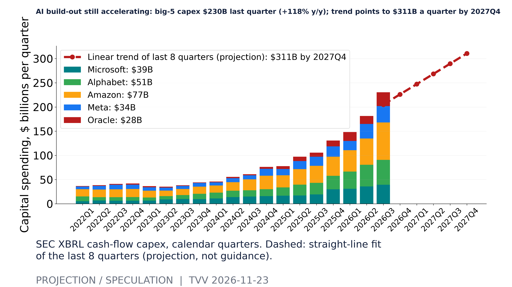
AI build-out still accelerating: big-5 capex $230B last quarter (+118% y/y); trend points to $311B a quarter by 2027Q4. SEC XBRL cash-flow capex, calendar quarters. Dashed: straight-line fit of the last 8 quarters (projection, not guidance). [Projection/Speculation; data as of 2026Q3] Source: data.sec.gov data page
6. Econo-Metrics
- ★ December hike all but priced: traders put about 96% odds on a quarter-point Fed hike at the Dec 8-9 meeting, up from about 92% Friday (CME FedWatch via CNBC). The 2-year Treasury yield rose more than 10 basis points to 4.719% and the 30-year 15 bp to 5.317% as stocks rebounded. Revised Q3 GDP (expected 3.4%) and October core PCE (expected +0.3% after 3.1% annual in September) are due Wednesday. CNBC · Bloomberg
- ★ Conflicting Fed views: New York Fed President John Williams still favors tighter policy but says now is not the time for "dramatic action" (Reuters via Investing.com); a bank economist tells Business Insider to expect three consecutive hikes starting in December, while a Reuters commentary argues an AI bubble burst could put rate cuts back on the table. Investing.com · Business Insider · Reuters
- ★ Early layoff signal steady: temporary help jobs, which fell 10-20% before or during the 2001 and 2008 recessions, stood at 2.526 million in October, 20% below the March 2022 peak but up 3.0% in a year (BLS via FRED; see graph). FRED
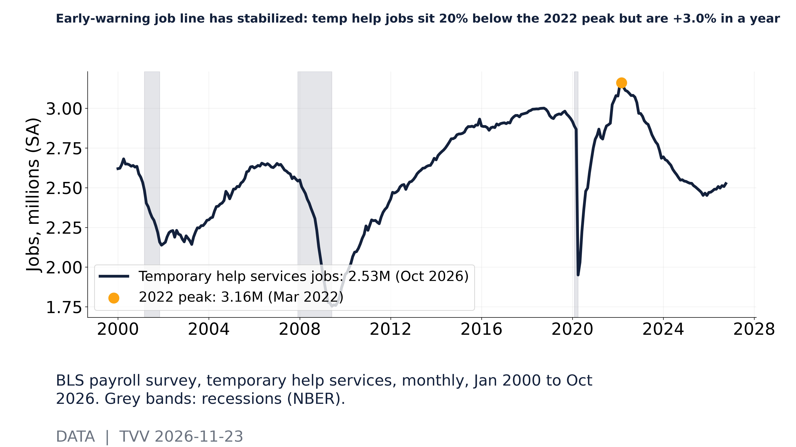
Early-warning job line has stabilized: temp help jobs sit 20% below the 2022 peak but are +3.0% in a year. BLS payroll survey, temporary help services, monthly, Jan 2000 to Oct 2026. Grey bands: recessions (NBER). [Data; data as of 2026-10] Source: fred.stlouisfed.org data page
7. Epidemic / Bio-Metrics
- ★ Ebola responders trapped: WHO chief Tedros says heavy fighting near a hospital in DR Congo's Ituri province forced Ebola responders to shelter in a maternity ward for more than 24 hours, close to where the outbreak began; WHO has verified more than 87 attacks on health care in Congo this year (UN News). WHO's latest outbreak report counts 11,613 confirmed cases and 5,678 deaths as of Nov 17 (48.9% fatality) with transmission active in 48 health zones, and the emergency remains a PHEIC. UN News · WHO · Al Jazeera
- ★ Flu season arrives early: 3.80% of US doctor visits were for flu-like illness in week 45, the second-highest of 12 seasons for that week, behind 2022-23 (CDC ILINet; see graph). At least seven children have died and about 50,000 people were treated in hospitals (CBS News), and a mutated 2009 H1N1 strain is suspected (TODAY). CDC FluView · CBS News · TODAY
- ★ Bird flu spreads in poultry: Japan culled 80,000 hens in its third outbreak of the season (Nature World News); the UK confirmed bird flu at a commercial farm (BBC); Delaware detected it (WBOC); and states are pushing a dairy-cow vaccination plan (Farms.com). Nature World News · BBC · Farms.com
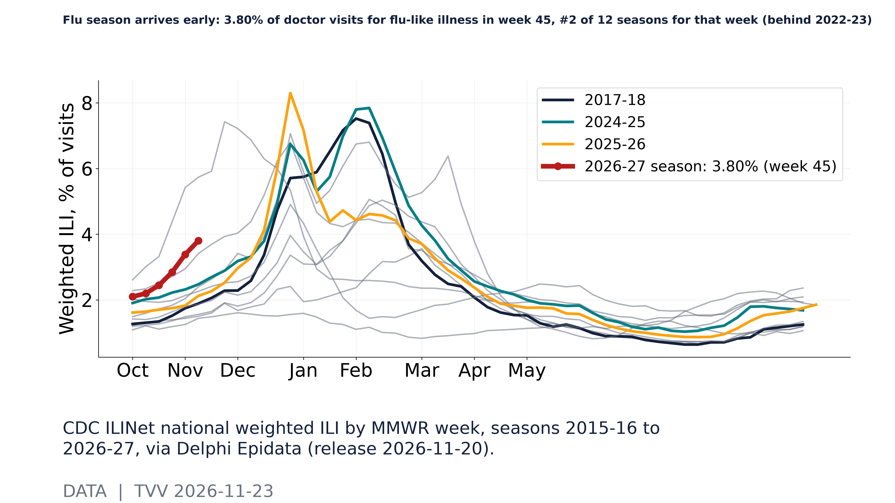
Flu season arrives early: 3.80% of doctor visits for flu-like illness in week 45, #2 of 12 seasons for that week (behind 2022-23). CDC ILINet national weighted ILI by MMWR week, seasons 2015-16 to 2026-27, via Delphi Epidata (release 2026-11-20). [Data; data as of week 202645] Source: cdc.gov data page
8. Gold and Silver and Commodities
- ★ Gold whipsaw: COMEX gold was $3,669.80 at 10:58 AM ET Monday, up 4.4% from Friday's $3,515.40 settle, after falling 9.5% in the week to Nov 20, its steepest weekly drop since March (see graph). Last week gold fell with stocks as hike odds topped 90%, a sell-everything deleveraging rather than a flight to safety (Fortune). Monday's bounce came as bargain hunters stepped in (Reuters) and Kitco says the AI selloff is reshaping the Fed outlook. Silver rose 5.8% to $43.44; gold is still down about 15% this year. Yahoo Finance · Reuters · Kitco · Fortune
- ★ Copper as an AI barometer: copper hit its lowest since April amid AI market turmoil and Chinese demand worries (WSJ) and wavered near $12,000 a ton after the AI-driven meltdown (Bloomberg); COMEX copper was $5.656 a pound at 10:59 AM ET, up 3.1% Monday. WSJ · Bloomberg
- ★ Oil slides despite Gulf attacks: Brent fell 4.0% to $86.32 and WTI 4.0% to $80.04 by 10:59 AM ET as traders weighed a supply surplus (WSJ), rising Middle East flows and a restarted Libyan pipeline (Reuters). Iran claims dozens of vessels are crossing Hormuz (EnergyNow); that claim is unverified and conflicts with a wartime high in reported attacks. Inside Iran, war damage leaves the country bracing for winter gas shortages (RFE/RL). WSJ · Reuters · EnergyNow · RFE/RL
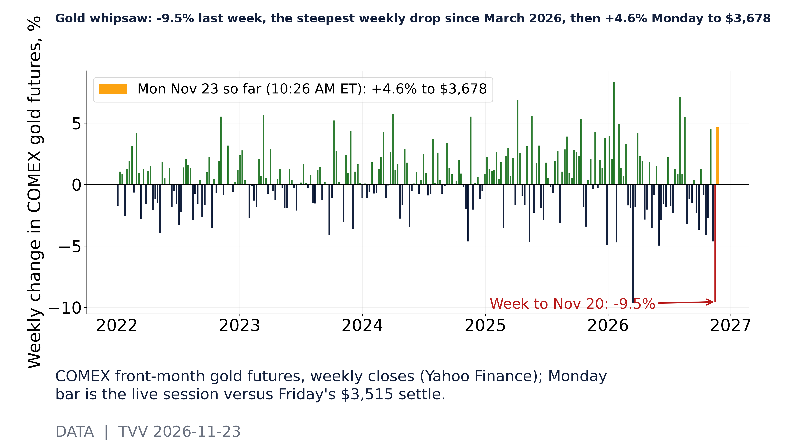
Gold whipsaw: -9.5% last week, the steepest weekly drop since March 2026, then +4.6% Monday to $3,678. COMEX front-month gold futures, weekly closes (Yahoo Finance); Monday bar is the live session versus Friday's $3,515 settle. [Data; data as of 2026-11-23 10:26 ET] Source: finance.yahoo.com data page
9. Stock Averages and Nasdaq Major Movers
- ★ Relief rally after the crash week: at 11:09 AM ET the S&P 500 was 7,260, +5.1% from Friday's 6,910.39, the Nasdaq Composite +6.9% at 24,186 and the Dow +3.2% at 49,668; the VIX eased to 27.3 (Yahoo Finance, live quotes). In the week to Nov 20 the S&P 500 fell 8.6%. History is mixed: after the seven earlier 8%-plus weekly drops since 1950, the index was higher a month later in four (median +8.1%) and lower in 1987, 2008 and 2020 (see graph). Near term, history argues for a bounce more often than not, but not a guaranteed bottom. Yahoo Finance · Barron's · NBC News
- ★ Global split: Asian markets tumbled overnight on AI bubble fears (Al Jazeera), with Korea's Kospi down 3.3% (CEO Economy), before Europe rallied on Huang's return as chip shares jumped (Yahoo Finance UK). Anthropic shares churned, defying the AI rally (Bloomberg). CoreWeave was up 24.3% at $49.12 at 11:09 AM ET. Al Jazeera · Yahoo Finance UK · Bloomberg
- ★ Bitcoin still lagging: Bitcoin traded near $62,700 at 11:09 AM ET, up about 2.5%, but its losing streak is the second-longest on record (CoinDesk), and Bloomberg reports a Bitcoin ETF exodus is removing a key source of support. CoinDesk · Bloomberg
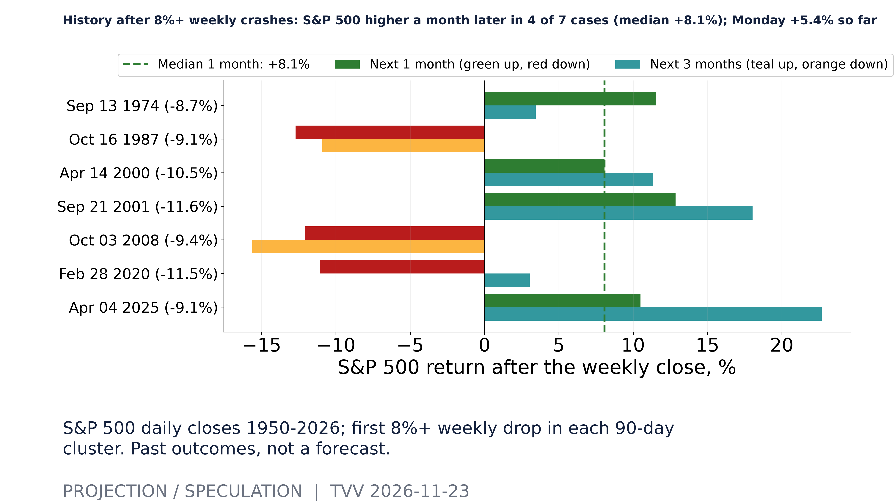
History after 8%+ weekly crashes: S&P 500 higher a month later in 4 of 7 cases (median +8.1%); Monday +5.4% so far. S&P 500 daily closes 1950-2026; first 8%+ weekly drop in each 90-day cluster. Past outcomes, not a forecast. [Projection/Speculation; data as of 2026-11-23 10:36 ET] Source: finance.yahoo.com data page
10. Polymarket and Kalshi Sentiment Highlights
- ★ Bettors blindsided on Nvidia: Polymarket's next-CEO market moved to 96.4% for Jensen Huang (no change) from 15.8% a week ago, while Arm's Rene Haas fell to 0.1% from 22.4% and Ian Buck to 0.9% from 16.5% (see graph). Near term, the market now treats the CEO question as settled; the board's investigation and the SEC probe are the remaining risks. Polymarket
- ★ Stocks still favored for 2026: even after the crash, bettors give 93.0% odds the S&P 500 beats gold and Bitcoin in 2026 (73.5% a month ago), gold 5.5% and Bitcoin 2.4% (16.5% a month ago). Year to date the S&P 500 is up about 6%, gold down about 15% and Bitcoin down about 29% (see graph). Near term, a five-week reversal of that order would need an unusually violent move. Polymarket
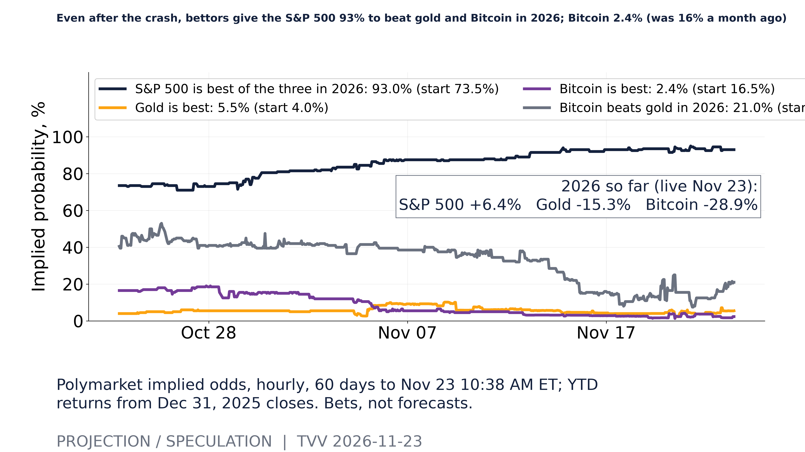
Even after the crash, bettors give the S&P 500 93% to beat gold and Bitcoin in 2026; Bitcoin 2.4% (was 16% a month ago). Polymarket implied odds, hourly, 60 days to Nov 23 10:38 AM ET; YTD returns from Dec 31, 2025 closes. Bets, not forecasts. [Projection/Speculation; data as of 2026-11-23 10:38 ET] Source: polymarket.com data page
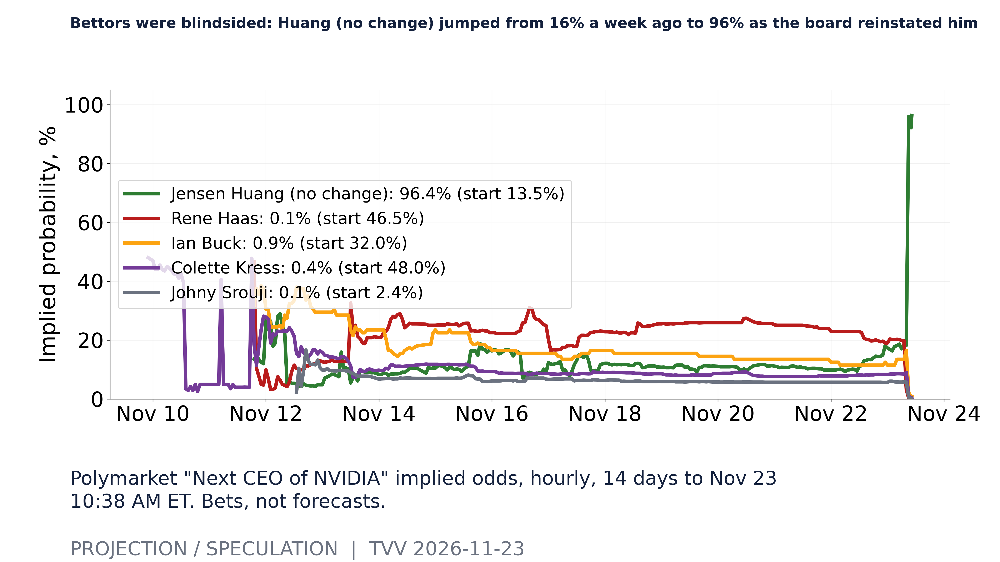
Bettors were blindsided: Huang (no change) jumped from 16% a week ago to 96% as the board reinstated him. Polymarket "Next CEO of NVIDIA" implied odds, hourly, 14 days to Nov 23 10:38 AM ET. Bets, not forecasts. [Projection/Speculation; data as of 2026-11-23 10:38 ET] Source: polymarket.com data page
11. Tech-Metrics
- ★ Huang is back: Nvidia's board unanimously reinstated Jensen Huang as president, CEO and director, effective immediately, saying it was satisfied with his candor and received input from senior US government levels that his return poses no national-security risk. Board chair Harvey Jones stays, Colette Kress remains CFO, the independent investigation continues and Nvidia will hire a Chief Compliance Officer. The board had rejected his return days earlier; Huang is to be interviewed next week by three House committees (AP). Nvidia was $168.39 at 11:09 AM ET, +34.1% from Friday's $125.53, on track for its second-best day since 1999 behind +42.4% on Mar 7, 2000 (see graph). Nvidia Newsroom · SEC 8-K · AP News
- ★ The 10-Q is still missing: Nvidia has not filed its quarterly report for the quarter ended Oct 25, day 29, while its last 20 10-Qs came 0-7 days after the earnings release; the 40-day deadline is Friday Dec 4, and a Form NT 10-Q would add five days. Nvidia last filed an NT 10-Q in September 2006 (SEC EDGAR; see graph). Investors are reading the fine print (Crypto Briefing; The Motley Fool), and The New York Times reports US officials tracked Alice Huang's contacts with a Chinese spy agency. Near term, a late filing or NT 10-Q would be the next test of the rebound. SEC EDGAR · Crypto Briefing · The New York Times
- ★ China's model race: Alibaba released Qwen4-Max, a 2.4-trillion-parameter model with a 1-million-token context window, pitched as better at coding and reasoning at lower cost (Tech Critter; SoyaCincau). Tech Critter · SoyaCincau
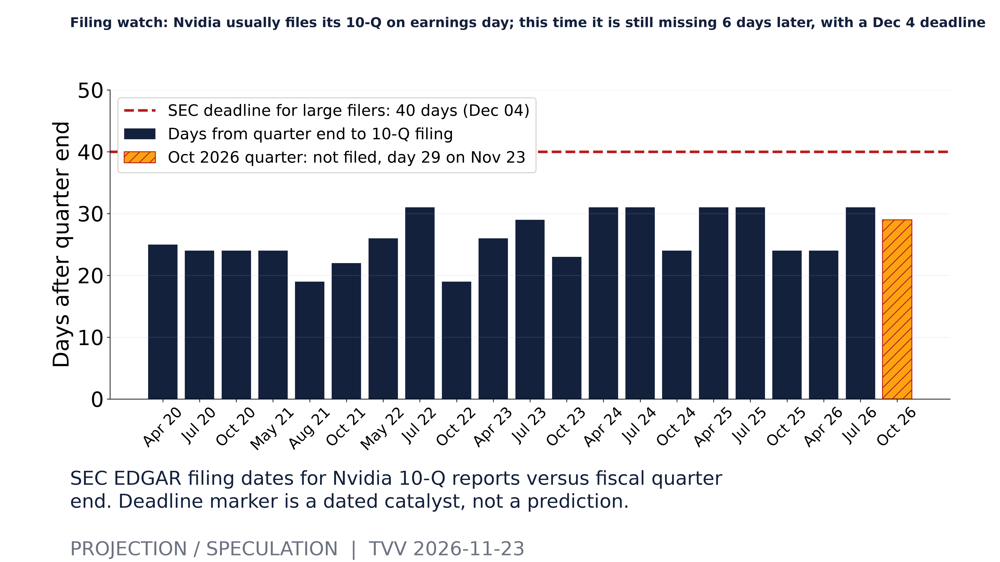
Filing watch: Nvidia usually files its 10-Q on earnings day; this time it is still missing 6 days later, with a Dec 4 deadline. SEC EDGAR filing dates for Nvidia 10-Q reports versus fiscal quarter end. Deadline marker is a dated catalyst, not a prediction. [Projection/Speculation; data as of 2026-11-23] Source: sec.gov data page
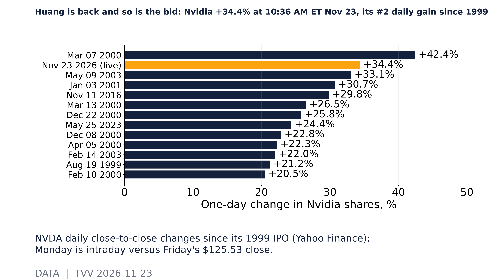
Huang is back and so is the bid: Nvidia +34.4% at 10:36 AM ET Nov 23, its #2 daily gain since 1999. NVDA daily close-to-close changes since its 1999 IPO (Yahoo Finance); Monday is intraday versus Friday's $125.53 close. [Data; data as of 2026-11-23 10:36 ET] Source: finance.yahoo.com data page
12. AI Hypergrowth Risks
- ★ AI success shock, unverified: after an Anthropic mathematician said Claude helped prove the Riemann hypothesis (WSJ), bettors raised odds that AI solves at least one more Millennium Prize problem in 2026 to 73% from 13% a week ago (see graph). Outside experts have not verified the proof, and the Clay Institute requires publication and a waiting period before any award. Near term, bettors expect a credible claim, not a confirmed prize, before year-end. Polymarket · WSJ · ForkLog
- ★ Capability bets cool: odds that any AI model reaches a 1580 Coding Arena score by Dec 31 fell to 19.5% from 46.0% a week ago, and OpenAI announcing AGI before 2027 sits at 7.5% (see graph). Near term, bettors see incremental model gains, not a breakout, by year-end. Polymarket
- ★ Unintended AI failures: Microsoft's Brad Smith warns the race to patch AI-found flaws could mean months of outages (Technology Org), and Quartz reports the US intelligence chief warned of more tech outages as AI-era upgrades continue; 9to5Mac argues five recent outages were not caused by AI but the next round will be. Technology Org · Quartz · 9to5Mac
- ★ AI and jobs: Enphase is cutting 320 jobs and its 8-K cites AI and cheaper regions (FourWeekMBA); Apple reportedly laid off Siri staff while sparing newer AI teams (MacRumors, citing Bloomberg's Gurman); Business Standard reports 72% of India's tech workers want to switch careers amid layoffs and AI fears. FourWeekMBA · MacRumors · Business Standard
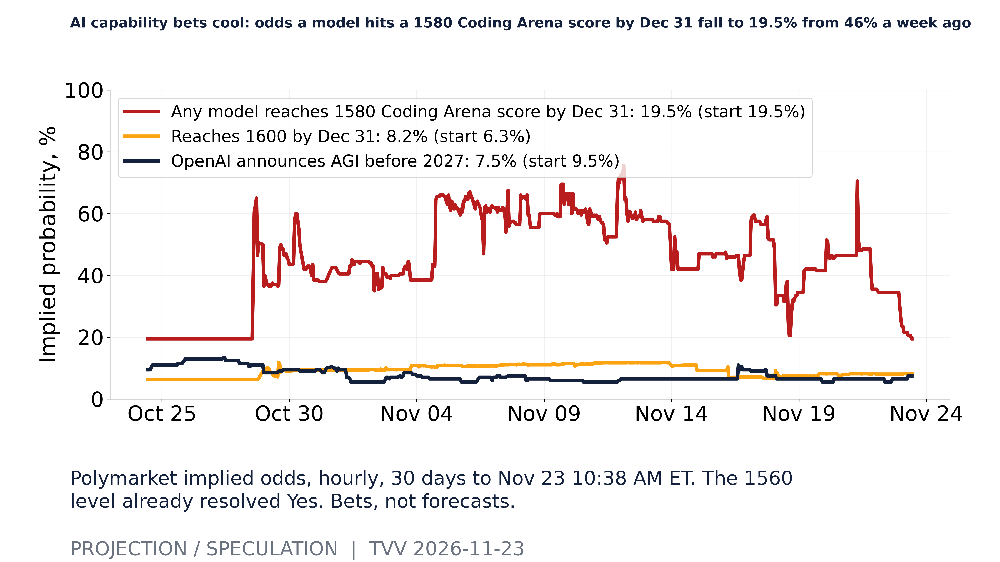
AI capability bets cool: odds a model hits a 1580 Coding Arena score by Dec 31 fall to 19.5% from 46% a week ago. Polymarket implied odds, hourly, 30 days to Nov 23 10:38 AM ET. The 1560 level already resolved Yes. Bets, not forecasts. [Projection/Speculation; data as of 2026-11-23 10:38 ET] Source: polymarket.com data page
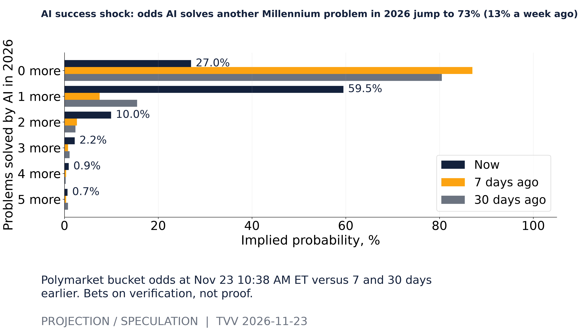
AI success shock: odds AI solves another Millennium problem in 2026 jump to 73% (13% a week ago). Polymarket bucket odds at Nov 23 10:38 AM ET versus 7 and 30 days earlier. Bets on verification, not proof. [Projection/Speculation; data as of 2026-11-23 10:38 ET] Source: polymarket.com data page
13. Finance Bubble Derivatives Risk
- ★ Record bank derivatives book: US bank derivatives notional hit a record $300.5 trillion in 2026Q2, up 34.5% in a year, after Q1 alone added $88.4 trillion; interest-rate contracts are $205.9 trillion. Four large banks hold 80.2% of the total, while net current credit exposure fell 10.6% to $291 billion (OCC; see graph). OCC
- ★ Same-day options at records: SPX zero-days-to-expiry options averaged a record 3.58 million contracts a day in October, about 65% of SPX volume, versus 2.3 million in 2025; market-wide 0DTE hit 24.2 million a day in Q3 (Cboe; see graph). In Friday's 316-point slide, market-wide 0DTE puts led the move (Seeking Alpha). Cboe · Seeking Alpha
- ★ Leverage cuts both ways: the 2x long Nvidia ETF NVDL was $17.23 at 11:09 AM ET, +66.7% Monday, yet about 60% below its 2026 high, while the stock itself is about 30% below its high; 2x inverse NVDQ lost about 69% (Yahoo Finance; see graph). Daily compounding means 2x funds need far larger gains to recover after a near-50% drop in the stock. Yahoo Finance
- ★ AI financing tests: Nvidia-backed Firmus is weighing a $1.5 billion bond offering to fund Nvidia chips (Bloomberg; Data Center Dynamics), and Wall Street expects Anthropic's debt to land in junk territory (Crypto Briefing). FINRA margin debt eased 2.3% in October to $1.448 trillion from the June record (Seeking Alpha). Bloomberg · Data Center Dynamics · Crypto Briefing · Seeking Alpha
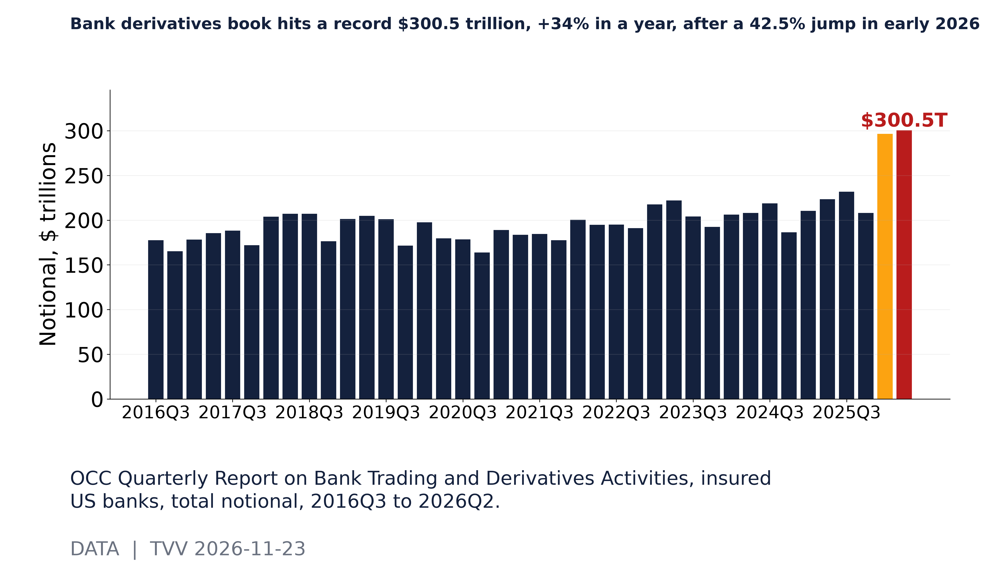
Bank derivatives book hits a record $300.5 trillion, +34% in a year, after a 42.5% jump in early 2026. OCC Quarterly Report on Bank Trading and Derivatives Activities, insured US banks, total notional, 2016Q3 to 2026Q2. [Data; data as of 2026Q2] Source: occ.gov data page
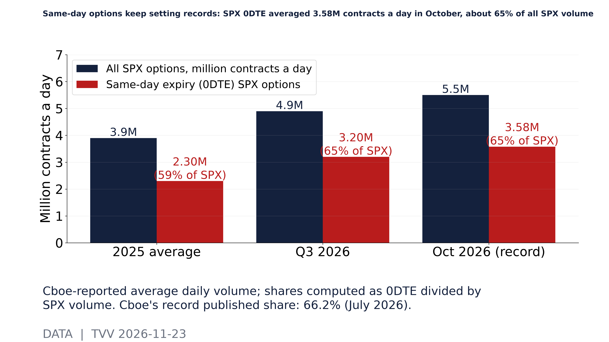
Same-day options keep setting records: SPX 0DTE averaged 3.58M contracts a day in October, about 65% of all SPX volume. Cboe-reported average daily volume; shares computed as 0DTE divided by SPX volume. Cboe's record published share: 66.2% (July 2026). [Data; data as of 2026-10] Source: ir.cboe.com data page
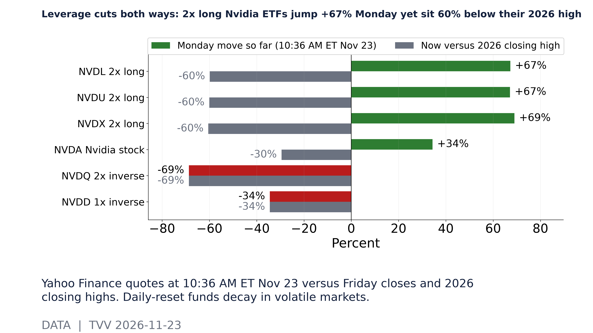
Leverage cuts both ways: 2x long Nvidia ETFs jump +67% Monday yet sit 60% below their 2026 high. Yahoo Finance quotes at 10:36 AM ET Nov 23 versus Friday closes and 2026 closing highs. Daily-reset funds decay in volatile markets. [Data; data as of 2026-11-23 10:36 ET] Source: finance.yahoo.com data page